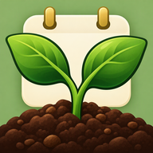

Latoya's Gardening Master Plan
Planting, transplant, and harvest dates in one place.
Add or edit a planting
My planting schedule
0plantings
0harvests in 30 days
0harvested
Backup and restore
Your records save only in this browser on this device. Export a backup regularly, especially before clearing browser data or changing phones.
Tip: GitHub Pages must remain enabled for the app URL to keep working. After the first successful visit, the app shell works offline.
Visual in this app was generated with Microsoft Copilot. Date estimates are planning targets; weather, variety, transplant shock, and seed-packet maturity definitions can shift results.